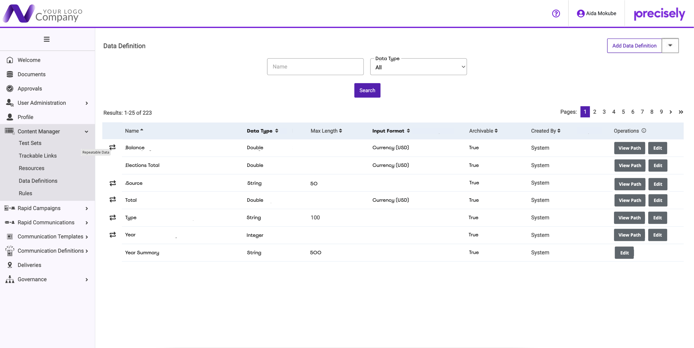
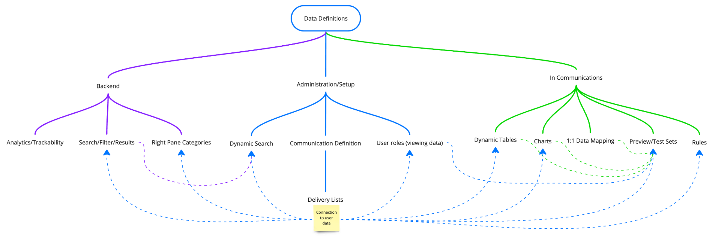
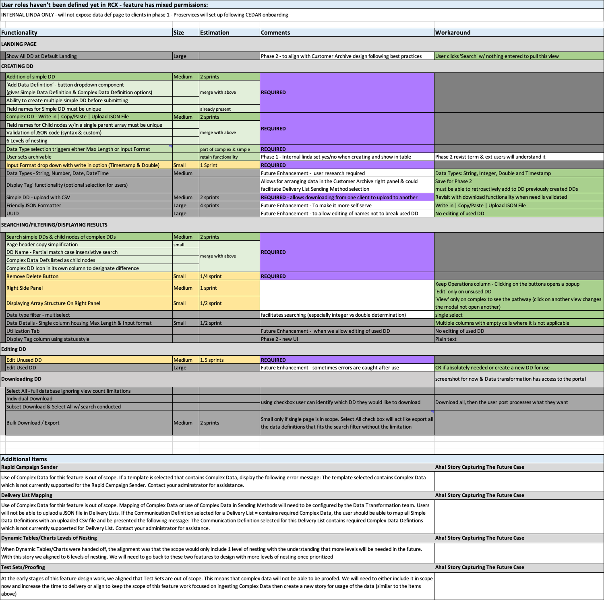

Case Study 03 · Scope Discipline & Process
This feature sits underneath nearly everything else in the platform. Tables, charts, and personalized communications all depend on this data being defined correctly first, which is exactly why due diligence here couldn't be optional, and why I fought to protect it under real delivery pressure.
A Note on This Case Study
The shipped version of Data Definitions doesn't fully reflect the design thinking behind it. This page covers the technical decisions, the scope discipline I stand behind, and where execution fell short of the design intent.
The Feature
Data Definitions lets users connect JSON or XML data files to the platform, defining each field's name, type, format, and additional attributes so other parts of the system (tables, charts, personalized communications) can use that data. In its MVP form, our Professional Services and Data Transformation teams are the primary users who set it up on behalf of the client during onboarding.

The Data Definitions table with complex data definitions marked
Design Process
Across three rounds of design check-ins, I worked through the full scope of the feature systematically. Each round built directly on engineering's feedback from the last. I proposed simplifications, deferred things deliberately with clear reasons, and asked pointed technical questions instead of guessing. Four negotiations mattered most: how search and landing worked, how editing was safeguarded, how deep nesting could go, and how ambiguous data types got resolved.
Landing & Searching
I modeled the search and filtering functionality on the existing Customer Archive pattern, which had been tested and aligned as the product direction. I also proposed replacing the platform's legacy wildcard search (a workaround that required users to type "*" just to get partial results) with modern partial-match, case-insensitive search. The team aligned to it, but it was descoped again once the deadline pressure caught up, and that debt is still unresolved.
Editing & Safeguards
I proposed giving every Data Definition a stable ID so future edits couldn't silently break existing connections. Engineering flagged it as a larger lift than the timeline allowed, so I worked out a simpler interim rule instead: editing stays open on any Data Definition that hasn't been used yet, and locks once it has. The original safeguard idea was logged as a future enhancement. That gap remains unresolved as of 2026 - the same fix is being proposed again now, to solve a problem it would have prevented in the first place.
Evidence Over Guessing
Rather than picking an arbitrary limit, I asked engineering directly what the max practical nesting depth should be. Getting this wrong in either direction had a real cost. Too shallow, and complex client data wouldn't fit. Too deep, and we'd be over-building for a case nobody actually had. A senior engineer answered from real production experience: six levels in practice, ten as a theoretical ceiling. We aligned on six as the spec for MVP, with room to expand later if the data justified it.
Defining the Data Types
I proposed collapsing integer and double into a single user-facing "Number" type, keeping the technical distinction invisible on the frontend, since the backend still needs it to run validations correctly. I also pushed back on the existing "Timestamp" label with a senior engineer directly, since it wasn't clear whether that meant a date, a date-time, or a time-only value. When I noticed the engineer was making the call based on opinion rather than evidence, I asked directly whether we actually had enough data to justify the decision.
Evidence-Based Decision-Making

Mapping every place in the platform this module touches
Rather than deciding solo on whether users should be able to delete a Data Definition, I gathered direct, attributed input from two senior stakeholders. One had handled this in a prior system: the only real-world case for deletion was if a definition was set up incorrectly. If editing had been in scope, it would have solved that concern. Without it, deletion and recreation was the only option. The other was more direct - deletion is dangerous, because a Data Definition can be mapped to multiple communication definitions, and deleting it can break communication creation entirely.
I backed that second warning with a real reproduced bug: create a Data Definition, attach it to a communication template, activate the template, then delete the Data Definition. The active template's rules screen breaks outright, because the record becomes an orphan with no mapping back to what used it. The evidence from this further emphasized the importance of getting the data pipeline solidified and ensuring the UUID piece comes first, so we can reconcile and mitigate this problem.
The MVP Decision
Partway through the project, scope and delivery timelines drifted out of alignment. Things I'd already flagged as out-of-scope kept resurfacing as if they were still open, against a delivery date that had already been promised. Rather than keep re-litigating it informally, I built a comprehensive, function-by-function scope breakdown. Every piece of functionality across the feature was sized, estimated in sprints, and tagged as required or future enhancement. Critically, every single item I cut came paired with a concrete workaround. Nothing was simply dropped without an interim path.

Every function, sized, tagged, and paired with a workaround
Flagging a dependency risk before anyone else caught it
Early on, I flagged that Test Sets - the tool used to proof communications - depended on Data Definitions closely enough that it needed to be considered in this feature's scope, not treated as fully separate. That got marked out of scope at the time. Months later, the org reversed that call and asked for a light-touch version squeezed into an already-tight timeline - validating my original flag, minus the lead time that would have given us the time to solve it correctly.
Dynamic Tables and Charts were originally built around a one-level nesting assumption, before Data Definitions with JSON existed. Data Definitions was built later, specifically to give those features real support for complex, nested client data. Its MVP allowed six levels of nesting, which directly set the ceiling on how complex a table or chart could get. Once that ceiling moved from one to six, I flagged that the original Dynamic Tables and Charts designs needed to be revisited, to confirm they could actually handle the added depth. My scoping document became the basis for a cross-level working session. It brought the right people into the room, at the right level, to drive a real, shared, data-grounded decision on what MVP actually meant.
Honest Outcome
Several planned pieces were cut without the follow-through they deserved, due to constraints outside my control. The scoping issues from this project didn't resolve after launch. They compounded. The consequences of those dev decisions are still surfacing, and I'm often the one who can explain why.